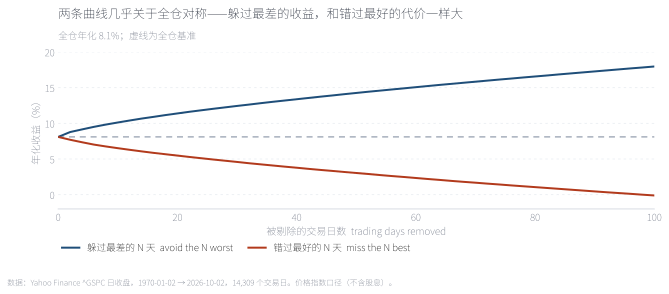
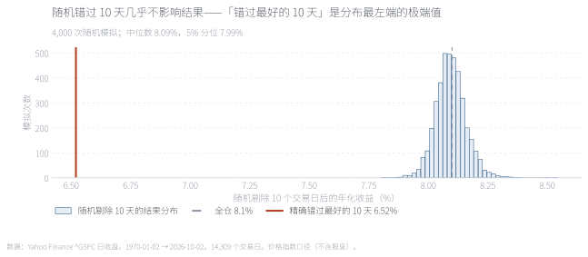
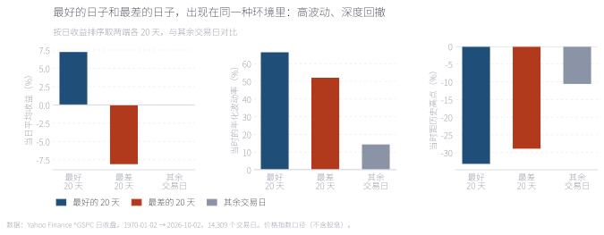
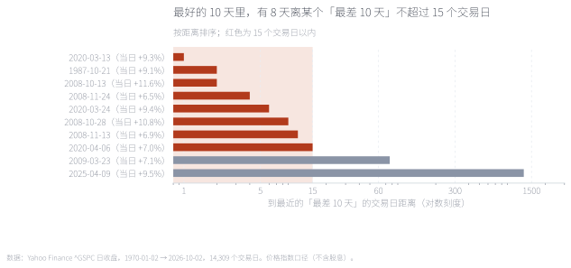
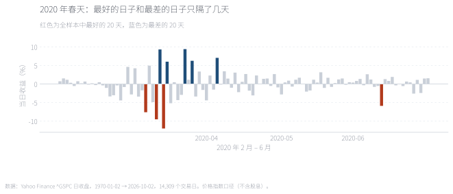
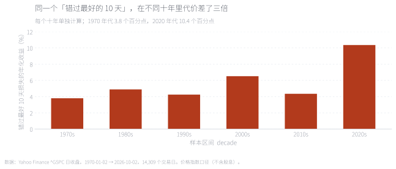

「错过涨幅最大的 10 天，长期收益会腰斩」被用来劝人不要择时。数字本身没错——用标普 500 从 1970 年至今 14,309 个交易日计算，全仓年化 8.10%，剔除最好的 10 天降到 6.52%。但这句话只引用了对自己有利的一半：剔除最差的 10 天，年化升到 10.12%，幅度几乎相同。它真正证明的是「精确择时非常值钱」，而不是「择时不可能」。真正的论证是另一件事：随机剔除任意 10 个交易日，年化几乎不变（8.09%）；而最好的日子和最差的日子出现在同一个地方——最好的 10 天里有 8 天，离某个「最差 10 天」不超过 15 个交易日。 "Miss the ten best days and your long-run return halves" is used to argue against market timing. The arithmetic is fine — on 14,309 trading days of the S&P 500 since 1970, buy-and-hold compounds at 8.10% a year and dropping the best ten days cuts it to 6.52%. But the argument quotes only the half that suits it: dropping the ten worst days lifts the return to 10.12%, almost the same distance. What it actually proves is that precise timing is valuable, not that timing is impossible. The real argument is different: dropping ten random days changes almost nothing (8.09%), and the best days cluster where the worst days are — eight of the ten best days sit within fifteen trading days of one of the ten worst.
关键词 择时 · 波动聚集 · 极端日 · 蒙特卡洛 · 行为偏差 · 组合执行Keywords market timing · volatility clustering · extreme days · Monte Carlo · behavioural bias · portfolio execution
「错过最好的 N 天」是财富管理行业最常被引用的一张图。它的形态几乎固定：一条是买入持有，另一条是错过涨幅最大的 10 天，两者的终值差距悬殊。这张图想说的道理很正当——不要在错误的时点离场——但它被用来支持的那个推论，比它实际能支持的要多。
先把数字复核一遍。样本是标普 500 价格指数，1970-01-02 至 2026-10-02 共 14,309 个交易日（56.7 年）。口径是：把某一天的收益从复利序列里剔除，等价于假设那天不在场、当天的收益为 0。
结论确认了原命题：全仓年化 8.10%，剔除最好的 10 天降到 6.52%。所以这句话的算术没有问题。问题出在下一步。
既然「剔除最好的日子会变差」，那就应该同样问一句：「剔除最差的日子会怎样？」把这同一件事做两遍，答案会让人重新理解这句话。

剔除最好的 10 天，年化从 8.10% 降到 6.52%（−1.58 个百分点）；剔除最差的 10 天，升到 10.12%（+2.02 个百分点）。两边幅度相当，甚至后者略大——因为最差的日子比最好的日子更极端（平均 −8.1% vs +7.2%）。所以这张图真正在说的事情是：如果你能精确择时，收益会非常可观；它并没有说明择时是否可行。把"错过最好"单独拿出来讲，是把一个对称的事实讲成了单边的恐吓。
Removing the ten best cuts the annualised return to 6.52% (−1.58 points); removing the ten worst lifts it to 10.12% (+2.02 points). The two sides are comparable, and the second is larger, because the worst days are more extreme than the best (−8.1% versus +7.2% on average).
来源：本文计算，数据见附录 A。Source: author's calculations; data in Appendix A.
| 剔除天数Days removed | 剔除最好的 N 天Best N removed | 剔除最差的 N 天Worst N removed | 差Gap |
|---|---|---|---|
| 1 | 7.89% | 8.54% | +0.65pp |
| 5 | 7.19% | 9.33% | +2.14pp |
| 10 | 6.52% | 10.12% | +3.60pp |
| 20 | 5.48% | 11.39% | +5.91pp |
| 50 | 3.04% | 14.26% | +11.22pp |
| 100 | -0.11% | 17.97% | +18.08pp |
单位 %。"差"是躲过最差的收益减去错过最好的代价；为正说明精确择时的诱惑比"错过最好"的恐吓更大。
In per cent. A positive gap means avoiding the worst days is worth more than missing the best days costs.
第二个问题更根本："错过最好的 10 天"是一个有多大可能发生的事件？如果它不是常态，把它当作决策依据就不成立。做法是随机构造对照——从 14,309 个交易日里随机剔除 10 天，重复 4,000 次。

随机剔除 10 天，年化收益的中位数是 8.09%——和全仓的 8.10% 几乎没有区别，5% 分位也有 7.99%。而"精确错过最好的 10 天"（6.52%）落在整个分布的第 0.0 百分位。换句话说，随机的择时错误几乎无害；只有"精确地在最好的日子离场"才有害，而那不是随机错误，是一种能力——一种反向的能力。用这个极端值去吓唬一个随机犯错的投资者，是拿错了标尺。
Removing ten random days leaves the median at 8.09%, essentially unchanged, with a 5th percentile of 7.99%. Missing exactly the ten best lands at the 0.0th percentile. Random timing mistakes are close to harmless; only precise avoidance of the best days hurts, and that is not a random error.
来源：本文计算，4,000 次随机模拟。Source: author's calculations, 4,000 simulations.
那么"不要择时"到底该怎么论证？答案不在"错过最好"，而在波动聚集：大幅波动会扎堆出现，最好的日子和最差的日子属于同一段行情。先看这些日子长什么样。

最好的 20 天：平均当日涨幅 7.2%，但入场时的年化波动率高达 66%，平均处在距历史高点 −33% 的位置。最差的 20 天：波动 52%、距高点 −29%。其余一万多个交易日：波动只有 14%、距高点 −11%。好日子和坏日子住在同一栋楼里——都在熊市深处、都在高波动期。这也解释了为什么"极端日"虽只占全部交易日的 2%，却贡献了 36% 的方差。
The twenty best days averaged +7.2% but arrived with realised volatility of 66% and 33% below the prior peak; the twenty worst came with 52% and −29%. The other 14,000-plus days ran at 14% volatility and −11%. Extremes make up 2% of days and 36% of variance.
来源：本文计算；波动率为前 20 个交易日的年化标准差。Source: author's calculations; volatility is the annualised standard deviation of the prior 20 trading days.

把最好的 10 天逐一拿出来，测量它到最近的"最差 10 天"的交易日距离：有 8 天在 15 个交易日以内，其中 3 天只隔了 1–2 天。只有 2 天离得很远（76 天和 1274 天）。这就是"不可分性"的直接证据：你没有能力只躲开坏的那一半——当你判断该离场时，最好的日子通常就在附近。
Measured one by one, eight of the ten best days fall within fifteen trading days of one of the ten worst, and three are just one or two days away. Only two are far apart.
来源：本文计算。Source: author's calculations.

把 2020 年 2–6 月的日收益画出来：红色是全样本里最好的 20 天，蓝色是最差的 20 天。它们交替出现，中间只隔几天。3 月 12 日跌 9.5%，3 月 13 日涨 9.3%，3 月 16 日又跌 12%——任何在这段时间"先离场、等稳了再回来"的判断，都要面对这几天是同一周的集合。
Daily returns from February to June 2020: red marks the twenty best days in the whole sample, blue the twenty worst. They alternate within days of each other — 12 March fell 9.5%, 13 March rose 9.3%, 16 March fell 12%.
来源：本文计算。Source: author's calculations.
还有一层：被反复引用的"错过最好 10 天的代价"，本身不是一个稳定的统计量。把 56 年切成六个十年，各自计算。

1970 年代：3.8 个百分点；1980 年代 4.9；1990 年代 4.3；2000 年代 6.5；2010 年代 4.4；2020 年代 10.4。最高与最低差了三倍。差异的来源是显而易见的：2020 年 3 月那段极端波动里，最好的几天涨得特别猛，剔除它们自然代价巨大；而 1990 年代那种慢牛行情里，最好的几天也没那么突出。所以引用这句话时给出的具体数字，很大程度上是所选窗口的产物。
By decade the cost runs 3.8, 4.9, 4.3, 6.5, 4.4 and 10.4 points — a three-fold spread. The 2020s figure is high because March 2020 produced unusually violent up days; in the slow 1990s the best days were less exceptional. The quoted number is largely an artefact of the window chosen.
来源：本文计算，每个十年单独计算。Source: author's calculations, each decade computed separately.
拖动滑块，灰虚线是全仓 8.10%，两条曲线分别是"错过最好的 N 天"和"躲过最差的 N 天"。值得在 10 天和 50 天两个位置各停一下：10 天时两侧分别是 −1.58 和 +2.02；50 天时是 −5.06 和 +6.16，都变成了年化几个百分点的量级，而这对曲线始终开口向上。它讲的是同一个事实：把日子选对的价值，等于把日子选错的代价。
Drag the slider. The dashed line is buy-and-hold at 8.10%. Pause at 10 and at 50 days: the two sides move by −1.58/+2.02 and −5.06/+6.16 points respectively, staying symmetric throughout.
来源：本文计算，数据见附录 A。Source: author's calculations; data in Appendix A.
这篇文章要拆的不是结论，是论证。「不要择时」这个结论是对的，但"错过最好的 10 天"支持不了它，原因有三层：这句话只引用了一个方向（另一方向的幅度还更大）；它描述的极端情形落在随机分布的第 0 百分位（随机犯错几乎无害）；它给出的具体数字随窗口变化三倍。真正的论证要建立在不可分性上：最好的日子和最差的日子高度相邻（10 天里有 8 天相隔不超过 15 个交易日），而且都出现在高波动、深度回撤的环境里——你没有能力只躲开坏的那一半。
这条区分不只是文字游戏，它有实际含义。如果有人给你一个"能躲过最差的日子"的方案，上面那张对称图就是检验它的标尺：一个真实的择时能力必须表现为不对称——躲过最差的效果显著大于错过最好的代价，而且这个不对称要能在一个以上的十年里重复出现。否则它不是能力，是噪音。Sharpe（1975）在五十年前问过同一个问题的另一面：择时者要准确到什么程度才值得做；而对个人投资者的实证记录（Barber & Odean, 2000；Frazzini & Lamont, 2008）显示，真实世界里的择时错误不是随机的，而是系统性的——钱往往在高点涌入、低点撤出。[1][2][3] 波动聚集这一事实本身，是这条链上最稳的一环。[4]
最后是边界。本文用价格指数而非全收益指数（股息会略微抬高全仓基准，但不改变两侧的对称性）；剔除某日收益等价于假设当天完全不在场，现实中无法做到如此干净；十年的分段样本量偏小，2020 年代的 10.4 个百分点由个别几天主导。这些都不影响主结论，但值得写在明处。
Full English version below.
Question. "Miss the best ten days and your return halves" is one of the most reused charts in the industry. We test what it proves and what it does not, on 14,309 trading days of the S&P 500 price index from January 1970 to October 2026.
Result 1 — the arithmetic is fine. Buy-and-hold compounds at 8.10% a year; removing the ten best days cuts that to 6.52%.
Result 2 — but only half the evidence is quoted. Removing the ten worst days lifts the return to 10.12%, a move of +2.02 points against the −1.58 points of the quoted side. The worst days are more extreme than the best (−8.1% versus +7.2% on average), so the side that is left out is the larger one. What the chart actually demonstrates is that precise timing would be very valuable — not that timing is impossible.
Result 3 — the event is not typical. Removing ten random days leaves the median annualised return at 8.09% against 8.10% for buy-and-hold, with a 5th percentile of 7.99%. Missing exactly the ten best days sits at the 0.0th percentile of that distribution. Random timing errors are nearly harmless; only precise avoidance of the best days is costly.
Result 4 — the real argument is inseparability. The twenty best days carried average realised volatility of 66% and sat 33% below the prior peak, against 14% and −11% for ordinary days; the twenty worst were at 52% and −29%. Extremes are 2% of days and 36% of variance. Eight of the ten best days fall within fifteen trading days of one of the ten worst, three within one or two days. Spring 2020 shows it directly: −9.5% on 12 March, +9.3% on 13 March, −12% on 16 March.
Result 5 — the headline number is unstable. Computed by decade, the cost of missing the ten best days runs 3.8, 4.9, 4.3, 6.5, 4.4 and 10.4 percentage points — a three-fold spread. The frequently quoted figure is largely an artefact of the window.
Implication. The lesson is right — do not time the market — but it should rest on inseparability rather than on the cost of missing the best days. That distinction has a practical use: it is the test any timing claim must pass. Genuine timing skill must be asymmetric — avoiding the worst must pay more than missing the best costs — and that asymmetry must repeat across more than one decade.
数据。标普 500 价格指数（^GSPC）日收盘，1970-01-02 至 2026-10-02，共 14,309 个交易日；全收益指数（^SP500TR）日收盘自 1988 年起，用于稳健性对照。来源为 Yahoo Finance 公开行情接口（需显式给 period1/period2，否则日频会被截断），访问日期 2026-10-03。
做法。日收益 r＝P(t)/P(t−1)−1。「剔除第 k 天」＝把该日收益从复利序列中删除，等价于假设当天不在场、收益为 0。年化收益按首尾日期的实际年数折算。随机对照组为 4,000 次无放回抽样，每次随机剔除 10 天。
未计入。交易成本、税费、股息（主口径为价格指数）、以及"择时者离场期间资金的再投资收益"。剔除单日收益是一个理想化操作，现实中无法做到如此干净。
代码。tools/fetch_days_raw.py（取数）、tools/make_days_data.py（全部统计与模拟）、tools/make_days_figs.py（六张图）、tools/make_days_note.py（本页与交互图）。固定输入可完全复现。
Data. S&P 500 price index (^GSPC) daily closes, 2 January 1970 to 2 October 2026, 14,309 trading days; the total return index (^SP500TR) daily closes from 1988 as a robustness check. Both from the Yahoo Finance public chart endpoint (period1/period2 must be given explicitly or the daily series is truncated), accessed 3 October 2026.
Method. Daily return r = P(t)/P(t−1) − 1. "Removing day k" means deleting that day's return from the compounding sequence, equivalent to holding cash that day. Annualisation uses the actual number of years between the first and last dates. The control group is 4,000 draws without replacement, ten days each.
Not included. Transaction costs, taxes, dividends (the headline series is price-only), and any reinvestment return on the cash held while out of the market.
Code. tools/fetch_days_raw.py, tools/make_days_data.py, tools/make_days_figs.py, tools/make_days_note.py.
一、价格指数还是全收益。本文主口径用价格指数，这是那份流传最广的统计所用的口径。换成全收益指数，全仓基准会抬升约两个百分点，但两侧的对称性不变——原命题的推理问题与股息无关。
二、"剔除一天"是不现实的。真实的择时决策不是"某一天不在场"，而是一段时期的仓位变化，中间还夹着买卖成本与执行滑点。本文的口径只用来检验那个论证逻辑，不能直接当成策略回测。
三、随机模拟的假设。对照组假设每天都可被等概率剔除，这忽略了波动聚集——在真实世界里，"离场"往往发生在高波动期，因此比随机剔除更接近"错过最好 10 天"那一端。这恰恰支持本文的结论：问题不在随机错误，而在于离场时机的系统性偏差。
One: price versus total return. The headline series is price-only, matching the widely circulated chart. On a total return basis the buy-and-hold baseline rises by roughly two points but the two-sided symmetry is unchanged — the flaw in the reasoning has nothing to do with dividends.
Two: removing a single day is not realistic. A real timing decision is a position change over a period, with execution costs and slippage. This framework tests the logic of the argument, not a tradeable strategy.
Three: the random control assumes every day is equally likely to be dropped. That ignores volatility clustering: real exits tend to happen in high-volatility periods, which makes them closer to "missing the best days" than to a random draw. That strengthens the conclusion — the problem is not random error but systematic bias in when investors leave.